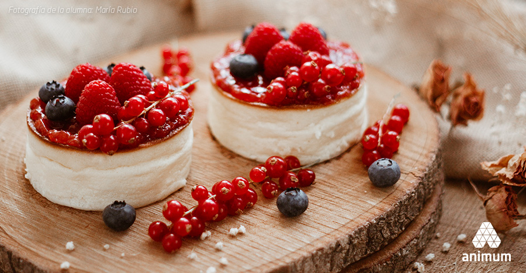

¡Bienvenido, adéntrate en los misterios de la fotografia con nuestro contenido y los
cursos que tenemos para ofrecerte!
En este espacio tienes acceso a gran variedad de contenido base que te será
muy útil
para iniciar en el mundo de la fotografía.
Descubre técnicas de fotografía y ponlas en practica para sacarle el máximo provecho a tu cámara, muchos tips
son aplicables
incluso para la cámara de tu teléfono móvil ¿no suena genial? anímate a explorar estas maravillosas
herramientas...Además,
puedes hacer parte de nuestra Comunidad Twice e interactuar y aprender con otros aficionados de
la
fotografía como tú.
Los objetivos ideales para lograr las mejores fotos de plantas serían un macro, un
teleobjetivo y un
gran angular.

FOTOGRAFÍA GASTRONÓMICA
Asegúrate de que lo más iluminado sea el alimento que estás fotografiando.
La iluminación es clave en cualquier tipo de fotografía pero aún más,
en aquella donde eres capaz de controlar y modelarla a tu antojo.
MODOS SEMIMANUALES
Lo que controlamos es la velocidad de obturación, es decir, el tiempo durante el cual la
lente permanece abierta
con la luz exterior penetrando en la cámara. Utilizalo cuando quieras congelar o reflejar
un movimiento. En situaciones en las que la escena esté en movimiento, que sea cambiante.
~ Te puede interesar ~
" No es lo que tienes, si no cómo usas lo que tienes lo que marca la diferencia "